## read in and clean datalibrary(tidyverse) # for cleaning and viewing datalibrary(here) # for importing datalibrary(ggpubr)library(rstatix)library(ggplot2)library(car)library(multcomp)library(nlme)library(emmeans)fig_2b_raw <-read.csv(here("data", "final_NCOS_2024_reformatted_for_R.xlsx - Fig2B.csv"))fig_3b_raw <-read.csv(here("data", "final_NCOS_2024_reformatted_for_R.xlsx - Fig3B.csv"))fig_4b_raw <-read.csv(here("data", "final_NCOS_2024_reformatted_for_R.xlsx - Fig4B.csv"))# set up custom thememyCustomTheme <-function() {theme_minimal() +theme(axis.text =element_text(size =12, family ="Times", color ="black"),axis.title =element_text(size =14, face ="bold", family ="Times", color ="black"),axis.title.y =element_text(margin =margin(r =15), size =14, face ="bold", family ="Times", color ="black"), # Add space between y-axis label and axistitle =element_text(size =12, face ="bold", family ="Times"),plot.caption =element_text(size =10, face ="italic", family ="Times"),legend.text =element_text(size =10, family ="Times"), # Increase legend text sizepanel.grid.major.x =element_blank(), # Remove major vertical grid linespanel.grid.minor.x =element_blank()) # Set axes ticks color to black}
Data reformatting and cleaning
Code
## 2B# add column for microbes or nopw <- fig_2b_raw %>%mutate(microbes =case_when(str_detect(sample_ID, "\\+microorganism") ~"y",TRUE~"n" )) %>%# add column for TB or nomutate(TB =case_when(str_detect(sample_ID, "TB") ~"y",TRUE~"n" )) %>%# add column for PW or nomutate(PW =case_when(str_detect(sample_ID, "PW") ~"y",TRUE~"n" ))pw_summary <- pw %>%group_by(day, sample_ID) %>%reframe(mean =mean(adh_plus_sup), # calculate the meann =length(adh_plus_sup), # count the number of observationsdf = n -1, # calculate the degrees of freedomsd =sd(adh_plus_sup), # calculate the standard deviationse = sd/sqrt(n), # calculate the standard error ) %>%mutate(microbes =case_when(str_detect(sample_ID, "\\+microorganism") ~"y",TRUE~"n")) %>%# add column for TB or nomutate(TB =case_when(str_detect(sample_ID, "TB") ~"y", TRUE~"n")) %>%# add column for PW or nomutate(PW =case_when(str_detect(sample_ID, "PW") ~"y", TRUE~"n")) ## aquatic environmental biofilm (4b but I think its supposed to be 3b)# add column for microbes or noae <- fig_3b_raw %>%rename(sample_ID = Adherent.sample.ID) %>%# add columns for components y/n# add column for TB or nomutate(TB =case_when(str_detect(sample_ID, "TB") ~"y",TRUE~"n" )) %>%# add column for PW or nomutate(PW =case_when(str_detect(sample_ID, "PW") ~"y",TRUE~"n" ))## Monolayer (3b but I think its supposed tobe 4b)# add column for microbes or nomonolayer <- fig_4b_raw %>%rename(sample_ID = sample.ID) %>%rename(adh_plus_sup = ahd_plus_sup) %>%# rename sample_id to only include treatment, not daymutate(sample_ID =str_replace(sample_ID, "-D[0-9]+$", "")) %>%# add columns for components y/nmutate(microbes =case_when(str_detect(sample_ID, "\\+microbes") ~"y",TRUE~"n" )) %>%# add column for TB or nomutate(TB =case_when(str_detect(sample_ID, "TB") ~"y",TRUE~"n" )) %>%# add column for PW or nomutate(PW =case_when(str_detect(sample_ID, "PW") ~"y",TRUE~"n" ))
Visualizations
2b: Pond water
Renwei’s figure
Caitlin’s version
Code
fig_2b <- pw_summary %>%# reorder to match Renwei's plotmutate(sample_ID =factor(sample_ID, levels =c("1%TB", "MQ", "1%TB+PW+microorganism", "PW+microorganism", "1%TB+PW-microorganism", "PW-microorganism", "Added Bd"))) %>%ggplot(aes(x = day, y = mean, color = sample_ID)) +geom_point(size =2) +geom_errorbar(aes(ymin = mean - se, # plot the standard errorymax = mean + se),width =0.1) +scale_y_log10(limits =c(1e3, 1e8), breaks =c(1e3, 1e4, 1e5, 1e6, 1e7, 1e8)) +# vibes# vibeslabs(x ="Day",y ="Bd Quantity per sample (ZE/well)",color ="Medium", # Title for color legendlinetype ="Microbes Present"# Title for linetype legend ) +scale_color_manual(values =c("1%TB"="#CCBB44", "MQ"="#228833", "1%TB+PW+microorganism"="#4477AA", "PW+microorganism"="#EE6677", "1%TB+PW-microorganism"="#66CCEE",#"Added Bd" = "#BBBBBB" # removed bc not really a medium"PW-microorganism"="#AA3377"), # Assign specific colors to match RC's plotlabels =c("1%TB"="TB","MQ"="MQ","1%TB+PW+microorganism"="TB + PW + MO","PW+microorganism"="PW + MO","1%TB+PW-microorganism"="TB + PW - MO","PW-microorganism"="PW - MO","Added Bd"="Initial Bd")) +# Custom labels for the color legendgeom_line(aes(linetype = microbes)) +scale_linetype_manual(values =c("n"="dashed", "y"="solid"),labels =c("n"="N", "y"="Y")) +# Change labels to uppercase N and YmyCustomTheme()+scale_x_continuous(breaks =c(0, 1, 3, 5, 7),labels =c("Initial\nBd", "1", "3", "5", "7"))theme(legend.position ="right") # Adjust the legend position to overlap with the plot
Code
fig_2b
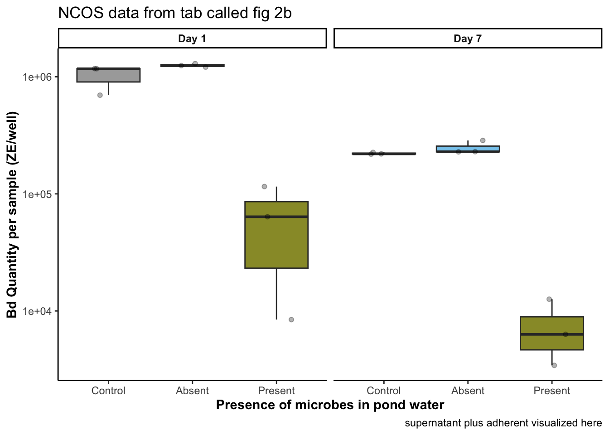
Questions for group:
Connect initial Bd lines to day 1? Not measured for each medium, just a count of the dosing stock
Legend: diff color per treatment, or make the blues the same and the pinks the same color and differentiate between microbes with the dotted lines
Legend: how important is it to you to have the dotted lines in the correct colors? I keep fighting and losing this battle
2b EDA
visualize y var: bd load
Code
# untransformedpw_noday0 <- pw %>%filter(day !=0) %>%mutate(log_adh_plus_sup =log(adh_plus_sup)) # note: no zeroes so not log + 1ggqqplot(pw_noday0, "adh_plus_sup", title ="untransformed")
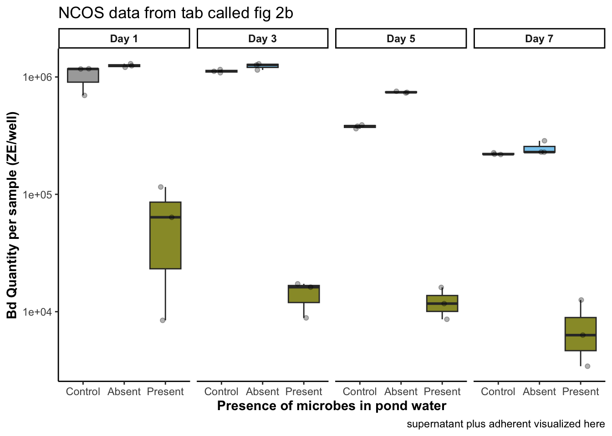
Code
shapiro.test(pw_noday0$adh_plus_sup) # nope
Shapiro-Wilk normality test
data: pw_noday0$adh_plus_sup
W = 0.49498, p-value = 2.434e-14
Code
hist(pw_noday0$adh_plus_sup) # note
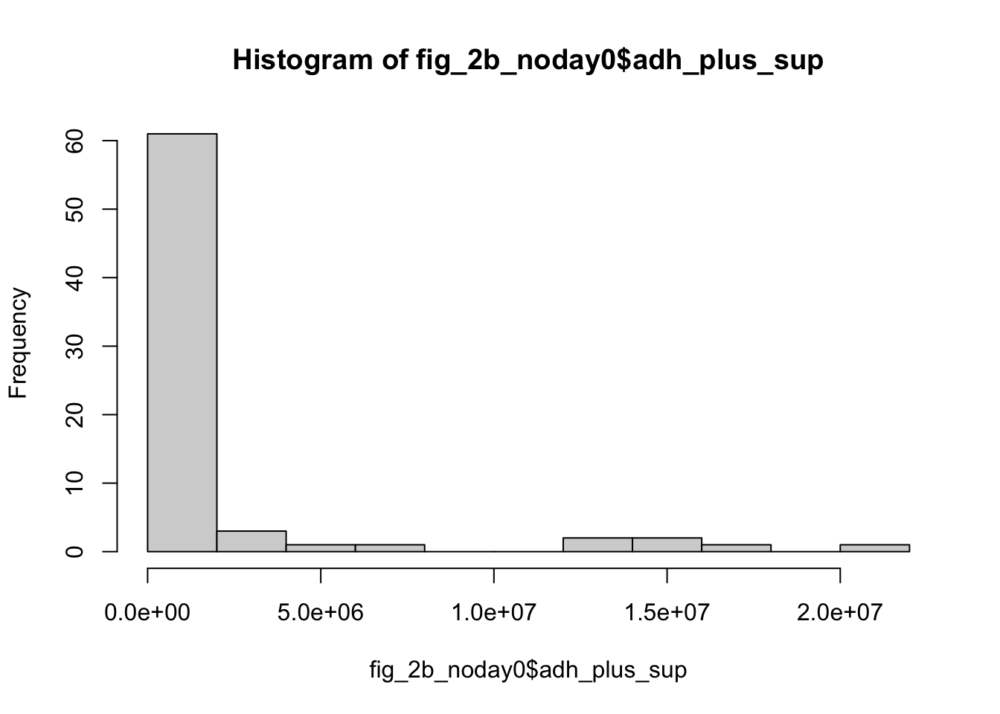
Code
# transformedggqqplot(pw_noday0, "log_adh_plus_sup", title ="log transformed") # gorgeous
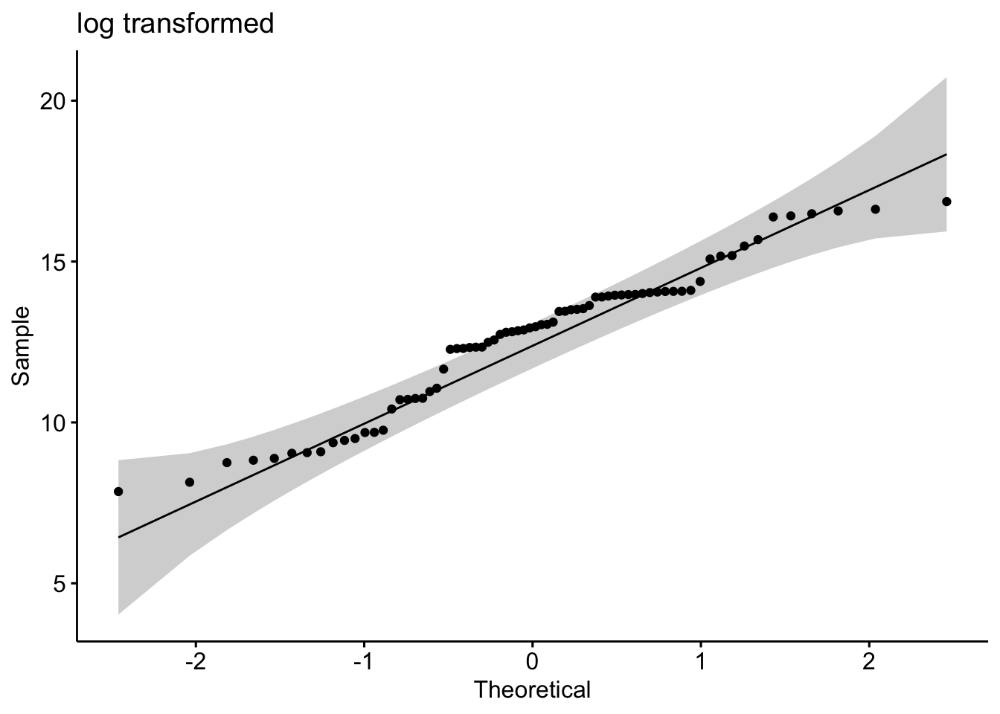
Code
hist(pw_noday0$log_adh_plus_sup) # better
Code
shapiro.test(pw_noday0$log_adh_plus_sup) # p-value = 0.01361, does not pass shapiro, but this has an n of 72 which is more than the recommended <50 samples
Shapiro-Wilk normality test
data: pw_noday0$log_adh_plus_sup
W = 0.95623, p-value = 0.01361
2b Stats
y var: amount of Bd
x vars: day, treatment, microbes y/n, pw y/n, tb y/n
Best model: Bd ~ day*microbes*TB
Question: Does the amount of Bd in the sample differ across the treatments of presence of microbes, TB, and day?
Model: 3-way ANOVA
Answer: Yes, there is a significant effect of day, presence of microbes, presence of TB as well as the interactions between day and microbes, day and TB, and a third-order interaction of day, microbes, and TB (three-way ANOVA, I recommend using a results table, it’s a lot of p and f and df values to list)
First-order comparisons:
Samples with: the presence of microbes are associated with lower Bd with TB have higher Bd days 1-7 and 3-7 are different, with day 1 having higher Bd than day 3 and day 3 having higher bd than day 7
I dont recommend writing out all second-order and third-order comparisons, but you can say something like there is an influence of the interaction of microbes and the day, and TB and the day.
Code
# quick check: we want day as a FACTORpw_noday0 <- pw_noday0 %>%mutate(day =as.factor(day))str(pw_noday0$day)
# comparisonsem <-emmeans(mod3, ~ day * microbes * TB)# Perform the Tukey test for pairwise comparisonstukey_results <-contrast(em, method ="tukey")# View the resultssummary(tukey_results)
contrast estimate SE df t.ratio p.value
day1 n n - day3 n n -0.0575 0.384 56 -0.150 1.0000
day1 n n - day5 n n 0.7401 0.384 56 1.928 0.8519
day1 n n - day7 n n 1.5591 0.384 56 4.061 0.0129
day1 n n - day1 y n 3.3333 0.470 56 7.089 <.0001
day1 n n - day3 y n 4.4079 0.470 56 9.374 <.0001
day1 n n - day5 y n 4.5479 0.470 56 9.672 <.0001
day1 n n - day7 y n 5.1429 0.470 56 10.937 <.0001
day1 n n - day1 n y 1.3425 0.384 56 3.497 0.0632
day1 n n - day3 n y -2.6381 0.384 56 -6.871 <.0001
day1 n n - day5 n y -0.8591 0.384 56 -2.238 0.6680
day1 n n - day7 n y 0.1493 0.384 56 0.389 1.0000
day1 n n - day1 y y 0.8516 0.470 56 1.811 0.9019
day1 n n - day3 y y 3.1263 0.470 56 6.648 <.0001
day1 n n - day5 y y 3.5891 0.470 56 7.633 <.0001
day1 n n - day7 y y 5.4008 0.470 56 11.485 <.0001
day3 n n - day5 n n 0.7976 0.384 56 2.077 0.7708
day3 n n - day7 n n 1.6166 0.384 56 4.210 0.0082
day3 n n - day1 y n 3.3908 0.470 56 7.211 <.0001
day3 n n - day3 y n 4.4654 0.470 56 9.496 <.0001
day3 n n - day5 y n 4.6054 0.470 56 9.794 <.0001
day3 n n - day7 y n 5.2004 0.470 56 11.059 <.0001
day3 n n - day1 n y 1.4000 0.384 56 3.646 0.0425
day3 n n - day3 n y -2.5806 0.384 56 -6.721 <.0001
day3 n n - day5 n y -0.8016 0.384 56 -2.088 0.7645
day3 n n - day7 n y 0.2068 0.384 56 0.539 1.0000
day3 n n - day1 y y 0.9091 0.470 56 1.933 0.8491
day3 n n - day3 y y 3.1838 0.470 56 6.771 <.0001
day3 n n - day5 y y 3.6466 0.470 56 7.755 <.0001
day3 n n - day7 y y 5.4583 0.470 56 11.607 <.0001
day5 n n - day7 n n 0.8190 0.384 56 2.133 0.7366
day5 n n - day1 y n 2.5932 0.470 56 5.515 0.0001
day5 n n - day3 y n 3.6677 0.470 56 7.800 <.0001
day5 n n - day5 y n 3.8078 0.470 56 8.098 <.0001
day5 n n - day7 y n 4.4028 0.470 56 9.363 <.0001
day5 n n - day1 n y 0.6024 0.384 56 1.569 0.9675
day5 n n - day3 n y -3.3782 0.384 56 -8.799 <.0001
day5 n n - day5 n y -1.5993 0.384 56 -4.165 0.0094
day5 n n - day7 n y -0.5908 0.384 56 -1.539 0.9725
day5 n n - day1 y y 0.1115 0.470 56 0.237 1.0000
day5 n n - day3 y y 2.3861 0.470 56 5.074 0.0005
day5 n n - day5 y y 2.8490 0.470 56 6.059 <.0001
day5 n n - day7 y y 4.6606 0.470 56 9.911 <.0001
day7 n n - day1 y n 1.7742 0.470 56 3.773 0.0299
day7 n n - day3 y n 2.8488 0.470 56 6.058 <.0001
day7 n n - day5 y n 2.9888 0.470 56 6.356 <.0001
day7 n n - day7 y n 3.5838 0.470 56 7.621 <.0001
day7 n n - day1 n y -0.2166 0.384 56 -0.564 1.0000
day7 n n - day3 n y -4.1972 0.384 56 -10.932 <.0001
day7 n n - day5 n y -2.4182 0.384 56 -6.298 <.0001
day7 n n - day7 n y -1.4098 0.384 56 -3.672 0.0396
day7 n n - day1 y y -0.7075 0.470 56 -1.504 0.9774
day7 n n - day3 y y 1.5672 0.470 56 3.333 0.0954
day7 n n - day5 y y 2.0300 0.470 56 4.317 0.0059
day7 n n - day7 y y 3.8417 0.470 56 8.170 <.0001
day1 y n - day3 y n 1.0745 0.543 56 1.979 0.8261
day1 y n - day5 y n 1.2146 0.543 56 2.237 0.6685
day1 y n - day7 y n 1.8095 0.543 56 3.333 0.0954
day1 y n - day1 n y -1.9908 0.470 56 -4.234 0.0076
day1 y n - day3 n y -5.9714 0.470 56 -12.699 <.0001
day1 y n - day5 n y -4.1925 0.470 56 -8.916 <.0001
day1 y n - day7 n y -3.1840 0.470 56 -6.771 <.0001
day1 y n - day1 y y -2.4817 0.543 56 -4.570 0.0026
day1 y n - day3 y y -0.2071 0.543 56 -0.381 1.0000
day1 y n - day5 y y 0.2558 0.543 56 0.471 1.0000
day1 y n - day7 y y 2.0674 0.543 56 3.808 0.0271
day3 y n - day5 y n 0.1401 0.543 56 0.258 1.0000
day3 y n - day7 y n 0.7350 0.543 56 1.354 0.9915
day3 y n - day1 n y -3.0654 0.470 56 -6.519 <.0001
day3 y n - day3 n y -7.0460 0.470 56 -14.984 <.0001
day3 y n - day5 n y -5.2670 0.470 56 -11.201 <.0001
day3 y n - day7 n y -4.2585 0.470 56 -9.056 <.0001
day3 y n - day1 y y -3.5562 0.543 56 -6.549 <.0001
day3 y n - day3 y y -1.2816 0.543 56 -2.360 0.5832
day3 y n - day5 y y -0.8187 0.543 56 -1.508 0.9769
day3 y n - day7 y y 0.9929 0.543 56 1.829 0.8952
day5 y n - day7 y n 0.5950 0.543 56 1.096 0.9991
day5 y n - day1 n y -3.2054 0.470 56 -6.817 <.0001
day5 y n - day3 n y -7.1860 0.470 56 -15.282 <.0001
day5 y n - day5 n y -5.4071 0.470 56 -11.499 <.0001
day5 y n - day7 n y -4.3986 0.470 56 -9.354 <.0001
day5 y n - day1 y y -3.6963 0.543 56 -6.807 <.0001
day5 y n - day3 y y -1.4216 0.543 56 -2.618 0.4075
day5 y n - day5 y y -0.9588 0.543 56 -1.766 0.9180
day5 y n - day7 y y 0.8528 0.543 56 1.571 0.9672
day7 y n - day1 n y -3.8004 0.470 56 -8.082 <.0001
day7 y n - day3 n y -7.7810 0.470 56 -16.547 <.0001
day7 y n - day5 n y -6.0020 0.470 56 -12.764 <.0001
day7 y n - day7 n y -4.9936 0.470 56 -10.619 <.0001
day7 y n - day1 y y -4.2913 0.543 56 -7.903 <.0001
day7 y n - day3 y y -2.0166 0.543 56 -3.714 0.0353
day7 y n - day5 y y -1.5538 0.543 56 -2.862 0.2666
day7 y n - day7 y y 0.2579 0.543 56 0.475 1.0000
day1 n y - day3 n y -3.9806 0.384 56 -10.368 <.0001
day1 n y - day5 n y -2.2016 0.384 56 -5.734 <.0001
day1 n y - day7 n y -1.1932 0.384 56 -3.108 0.1608
day1 n y - day1 y y -0.4909 0.470 56 -1.044 0.9995
day1 n y - day3 y y 1.7838 0.470 56 3.793 0.0282
day1 n y - day5 y y 2.2466 0.470 56 4.778 0.0013
day1 n y - day7 y y 4.0583 0.470 56 8.630 <.0001
day3 n y - day5 n y 1.7790 0.384 56 4.633 0.0021
day3 n y - day7 n y 2.7874 0.384 56 7.260 <.0001
day3 n y - day1 y y 3.4897 0.470 56 7.421 <.0001
day3 n y - day3 y y 5.7644 0.470 56 12.258 <.0001
day3 n y - day5 y y 6.2272 0.470 56 13.243 <.0001
day3 n y - day7 y y 8.0389 0.470 56 17.095 <.0001
day5 n y - day7 n y 1.0085 0.384 56 2.627 0.4021
day5 n y - day1 y y 1.7108 0.470 56 3.638 0.0434
day5 n y - day3 y y 3.9854 0.470 56 8.475 <.0001
day5 n y - day5 y y 4.4483 0.470 56 9.460 <.0001
day5 n y - day7 y y 6.2599 0.470 56 13.312 <.0001
day7 n y - day1 y y 0.7023 0.470 56 1.494 0.9788
day7 n y - day3 y y 2.9770 0.470 56 6.331 <.0001
day7 n y - day5 y y 3.4398 0.470 56 7.315 <.0001
day7 n y - day7 y y 5.2514 0.470 56 11.168 <.0001
day1 y y - day3 y y 2.2746 0.543 56 4.189 0.0087
day1 y y - day5 y y 2.7375 0.543 56 5.042 0.0005
day1 y y - day7 y y 4.5491 0.543 56 8.378 <.0001
day3 y y - day5 y y 0.4628 0.543 56 0.852 1.0000
day3 y y - day7 y y 2.2745 0.543 56 4.189 0.0087
day5 y y - day7 y y 1.8116 0.543 56 3.336 0.0945
P value adjustment: tukey method for comparing a family of 16 estimates
Bd ~ day + treatment
If it is important to you to have p-values comparing at the treatment level, you can use this instead, but I think it provides less information than the model above, and it has a higher aic value
# comparisonsemmeans::emmeans(mod2, pairwise ~ day) # same pattern as previous model, day 1-7 and 3-7
$emmeans
day emmean SE df lower.CL upper.CL
1 12.1 0.288 65 11.5 12.6
3 12.8 0.288 65 12.3 13.4
5 11.9 0.288 65 11.3 12.5
7 10.9 0.288 65 10.3 11.5
Results are averaged over the levels of: microbes, PW, TB
Confidence level used: 0.95
$contrasts
contrast estimate SE df t.ratio p.value
day1 - day3 -0.788 0.384 65 -2.054 0.1794
day1 - day5 0.172 0.384 65 0.447 0.9700
day1 - day7 1.182 0.384 65 3.081 0.0156
day3 - day5 0.959 0.384 65 2.501 0.0692
day3 - day7 1.970 0.384 65 5.135 <.0001
day5 - day7 1.010 0.384 65 2.634 0.0504
Results are averaged over the levels of: microbes, PW, TB
P value adjustment: tukey method for comparing a family of 4 estimates
Code
emmeans::emmeans(mod2, pairwise ~ microbes) # microbes p <.0001, no microbes sig more
$emmeans
microbes emmean SE df lower.CL upper.CL
n 13.89 0.166 65 13.56 14.2
y 9.95 0.288 65 9.38 10.5
Results are averaged over the levels of: day, PW, TB
Confidence level used: 0.95
$contrasts
contrast estimate SE df t.ratio p.value
n - y 3.94 0.332 65 11.862 <.0001
Results are averaged over the levels of: day, PW, TB
Code
emmeans::emmeans(mod2, pairwise ~ TB) # TB p = 0.0002, with TB is sig more
$emmeans
TB emmean SE df lower.CL upper.CL
n 11.4 0.214 65 11 11.8
y 12.5 0.214 65 12 12.9
Results are averaged over the levels of: day, microbes, PW
Confidence level used: 0.95
$contrasts
contrast estimate SE df t.ratio p.value
n - y -1.08 0.271 65 -3.981 0.0002
Results are averaged over the levels of: day, microbes, PW
3b Aquatic environmental biofilm on Bd growth:
All microbe-depleted, NO microbe+ treatment (from RC’s 3b figure legend)
Renwei’s figure
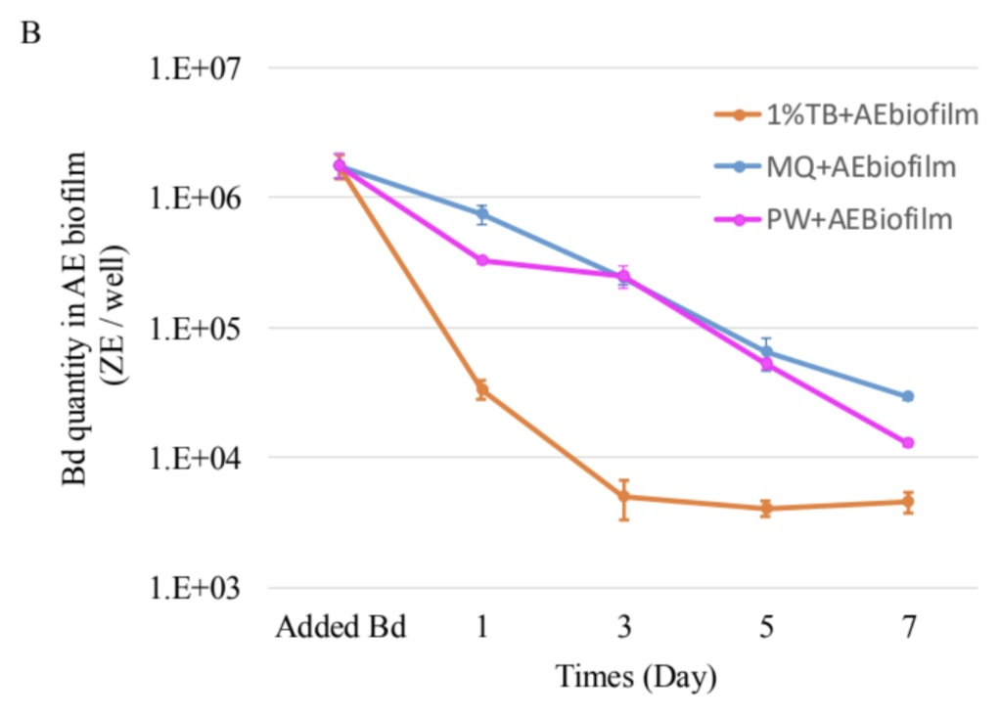
ggplot version: replicating Renwei’s AE
Code
ae_summary <- ae %>%group_by(day, sample_ID) %>%reframe(mean =mean(adh), # calculate the meann =length(adh), # count the number of observationsdf = n -1, # calculate the degrees of freedomsd =sd(adh), # calculate the standard deviationse = sd/sqrt(n), # calculate the standard error ) %>%# add column for TB or nomutate(TB =case_when(str_detect(sample_ID, "TB") ~"y", TRUE~"n")) %>%# add column for PW or nomutate(PW =case_when(str_detect(sample_ID, "PW") ~"y", TRUE~"n"))ae_summary %>%# reorder to match Renwei's plotmutate(sample_ID =factor(sample_ID,levels =c("1%TB+AEbiofilm", "MQ+AEbiofilm","PW+AEBiofilm", "Added Bd" ))) %>%ggplot(aes(x = day,y = mean,color = sample_ID)) +geom_point(size =2) +geom_errorbar(aes(ymin = mean - se, # plot the standard errorymax = mean + se),width =0.1) +geom_line() +scale_y_log10(limits =c(1e3, 1e7),breaks =c(1e3, 1e4, 1e5, 1e6, 1e7)) +# vibeslabs(x ="Day",y ="Bd Quantity per sample (ZE/well)",title ="Environmental Biofilm",caption ="only adherent Bd visualized here (the only data we have)") +scale_color_manual(values =c("1%TB+AEbiofilm"="orange","MQ+AEbiofilm"="blue","PW+AEBiofilm"="magenta","Added Bd"="darkgrey")) +# Assign specific colors to match RC's plottheme_minimal() +theme(panel.grid.major.x =element_blank(), # Remove major vertical grid linespanel.grid.minor.x =element_blank()) +# Remove minor vertical grid linesscale_x_continuous(breaks =c(0, 1, 3, 5, 7))
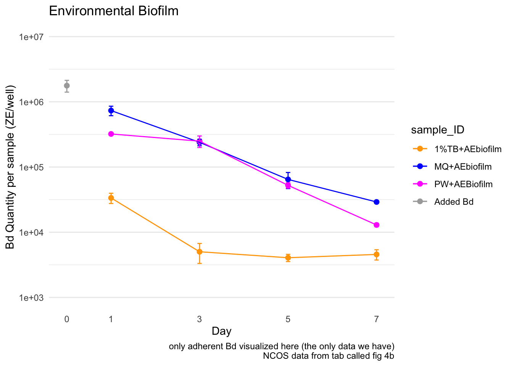
Caitlin’s version AE
Code
ae_summary <- ae %>%group_by(day, sample_ID) %>%reframe(mean =mean(adh), # calculate the meann =length(adh), # count the number of observationsdf = n -1, # calculate the degrees of freedomsd =sd(adh), # calculate the standard deviationse = sd/sqrt(n), # calculate the standard error ) %>%# add column for TB or nomutate(TB =case_when(str_detect(sample_ID, "TB") ~"y", TRUE~"n")) %>%# add column for PW or nomutate(PW =case_when(str_detect(sample_ID, "PW") ~"y", TRUE~"n"))ae_summary %>%# reorder to match Renwei's plotmutate(sample_ID =factor(sample_ID,levels =c("1%TB+AEbiofilm", "MQ+AEbiofilm","PW+AEBiofilm", "Added Bd" ))) %>%ggplot(aes(x = day,y = mean,color = sample_ID)) +geom_point(size =2) +geom_errorbar(aes(ymin = mean - se, # plot the standard errorymax = mean + se),width =0.1) +geom_line() +scale_y_log10(limits =c(1e3, 1e7),breaks =c(1e3, 1e4, 1e5, 1e6, 1e7)) +# vibeslabs(x ="Day",y ="Bd Quantity in AE Biofilm (ZE/well)",color ="Medium with\nAE Biofilm")+# Title for color legendscale_color_manual(values =c("1%TB+AEbiofilm"="#4477AA","MQ+AEbiofilm"="#228833",#"Added Bd" = "darkgrey","PW+AEBiofilm"="#AA3377"),labels =c("1%TB+AEbiofilm"="TB Broth","MQ+AEbiofilm"="MQ Water","PW+AEBiofilm"="Filtered\nPond Water","Added Bd"="Initial Bd")) +# Custom labelsmyCustomTheme()+scale_x_continuous(breaks =c(0, 1, 3, 5, 7),labels =c("Initial\nBd", "1", "3", "5", "7"))
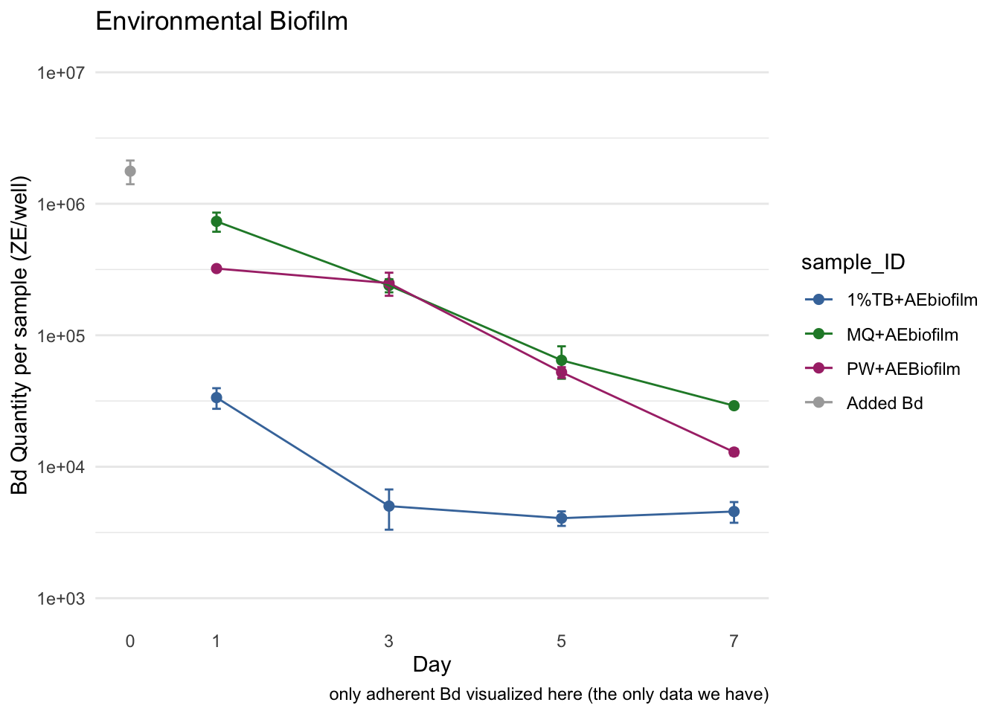
3b EDA
visualize y var: bd load
Code
# untransformedae_noday0 <- ae %>%filter(day !=0) %>%mutate(log_adh =log(adh)) # note: no zeroes so not log + 1ggqqplot(ae_noday0, "adh", title ="untransformed")
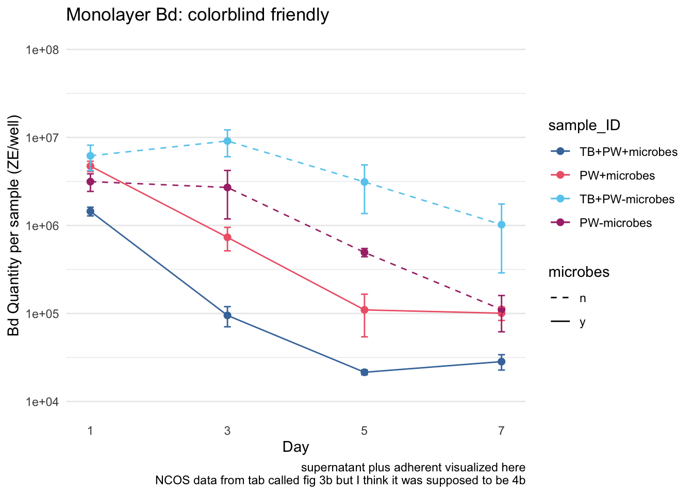
Code
shapiro.test(ae_noday0$adh) # nope
Shapiro-Wilk normality test
data: ae_noday0$adh
W = 0.69154, p-value = 2.089e-07
Code
hist(ae_noday0$adh) # note
Code
# transformedggqqplot(ae_noday0, "log_adh", title ="log transformed") # gorgeous
Code
hist(ae_noday0$log_adh) # better
Code
shapiro.test(ae_noday0$log_adh) # p-value = 0.1699 def normal
Shapiro-Wilk normality test
data: ae_noday0$log_adh
W = 0.95671, p-value = 0.1699
3b Stats
y var: amount of Bd in adherent
x vars: day & medium (MQ, TB, PW)
Bd ~ day*medium
Question: Does the amount of Bd in the aquatic environmental biofilm differ across the media tested and across the days?
Model: 2-way ANOVA
Answer: Yes, there is a significant effect of day, presence of microbes, presence of TB as well as the interactions between day and microbes, day and TB, and a third-order interaction of day, microbes, and TB (three-way ANOVA, I recommend using a results table, it’s a lot of p and f and df values to list)
Code
# quick check: we want day as a FACTORae_noday0 <- ae_noday0 %>%mutate(day =as.factor(day)) %>%# column for mediummutate(medium = sample_ID)str(ae_noday0$day)
Day 1 > Day 3 > Day 5 > Day 7 (all p <0.005) in other words, Bd significantly reduced each day
MQ+AEbiofilm > PW+AEBiofilm > 1%TB+AEbiofilm (TB plus biofilm has most Bd inhibition power, followed by pond water, then by milliQ with the least inhibition power)
lets try Bd ~ day*TB*PW
This is nearly identical, same AIC, I think needlessly complex
Code
# # build model# mod2 <- aov(log_adh ~ day*TB*PW,# data = ae_noday0)# # # diagnostic plot# par(mfrow = c(2,2))# plot(mod2) # kinda not homoskedastic# # # look at results# summary(mod2)# anova(mod2) # all significant and interaction sig# AIC(mod2) # 37.78083 same exact aic# # TukeyHSD(mod2) # all days sig diff from each other, all media sig diff from each other, second order is a bit messy
4b Monolayer biofilm on Bd growth:
It looks like solid lines are with microbes and dashed lines are without microbes
Renwei’s figure
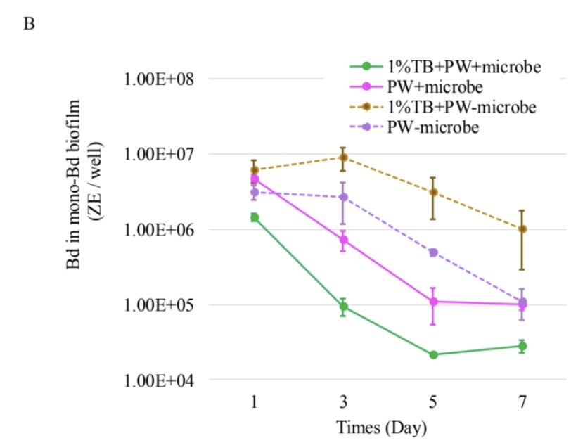
ggplot version: replicating Renwei’s ML
Code
monolayer_summary <- monolayer %>%group_by(day, sample_ID) %>%reframe(mean =mean(adh_plus_sup), # calculate the meann =length(adh_plus_sup), # count the number of observationsdf = n -1, # calculate the degrees of freedomsd =sd(adh_plus_sup), # calculate the standard deviationse = sd/sqrt(n), # calculate the standard error ) %>%mutate(microbes =case_when(str_detect(sample_ID, "\\+microbes") ~"y",TRUE~"n")) %>%# add column for TB or nomutate(TB =case_when(str_detect(sample_ID, "TB") ~"y", TRUE~"n")) %>%# add column for PW or nomutate(PW =case_when(str_detect(sample_ID, "PW") ~"y", TRUE~"n")) monolayer_summary %>%# reorder to match Renwei's plotmutate(sample_ID =factor(sample_ID, levels =c("TB+PW+microbes","PW+microbes","TB+PW-microbes", "PW-microbes"))) %>%ggplot(aes(x = day, y = mean, color = sample_ID)) +geom_point(size =2) +geom_errorbar(aes(ymin = mean - se, # plot the standard errorymax = mean + se),width =0.1) +geom_line(aes(linetype = microbes)) +scale_y_log10(limits =c(1e4, 1e8), breaks =c(1e4, 1e5, 1e6, 1e7, 1e8)) +# vibeslabs(x ="Day",y ="Bd Quantity per sample (ZE/well)",title ="Monolayer",caption ="supernatant plus adherent visualized here") +scale_color_manual(values =c("TB+PW+microbes"="palegreen4", "PW+microbes"="magenta", "TB+PW-microbes"="chocolate4", "PW-microbes"="purple")) +# Assign specific colors to match RC's plotscale_linetype_manual(values =c("n"="dashed", "y"="solid")) +theme_minimal() +theme(panel.grid.major.x =element_blank(), # Remove major vertical grid linespanel.grid.minor.x =element_blank()) +# Remove minor vertical grid linesscale_x_continuous(breaks =c(0, 1, 3, 5, 7))
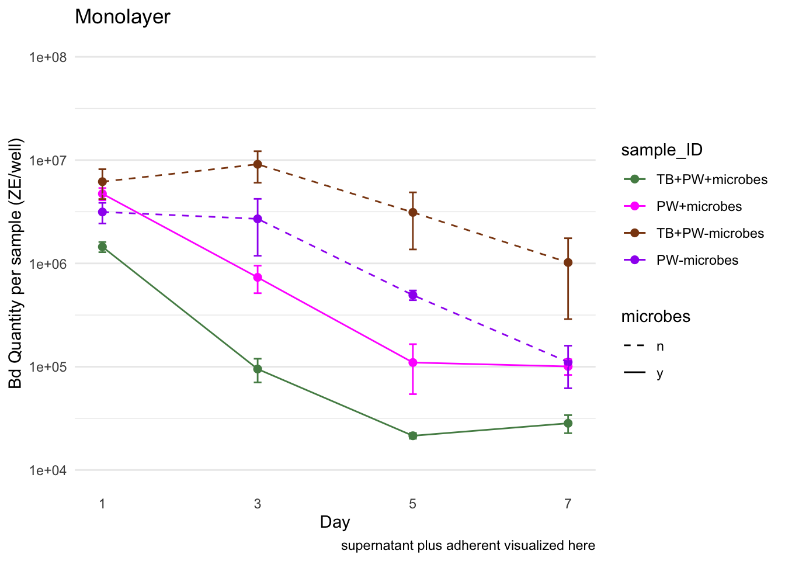
Caitlin’s version ML
Code
monolayer_summary <- monolayer %>%group_by(day, sample_ID) %>%reframe(mean =mean(adh_plus_sup), # calculate the meann =length(adh_plus_sup), # count the number of observationsdf = n -1, # calculate the degrees of freedomsd =sd(adh_plus_sup), # calculate the standard deviationse = sd/sqrt(n), # calculate the standard error ) %>%mutate(microbes =case_when(str_detect(sample_ID, "\\+microbes") ~"y",TRUE~"n")) %>%# add column for TB or nomutate(TB =case_when(str_detect(sample_ID, "TB") ~"y", TRUE~"n")) %>%# add column for PW or nomutate(PW =case_when(str_detect(sample_ID, "PW") ~"y", TRUE~"n")) monolayer_summary %>%# reorder to match Renwei's plotmutate(sample_ID =factor(sample_ID, levels =c("TB+PW+microbes","PW+microbes","TB+PW-microbes", "PW-microbes"))) %>%ggplot(aes(x = day, y = mean, color = sample_ID)) +geom_point(size =2) +geom_errorbar(aes(ymin = mean - se, # plot the standard errorymax = mean + se),width =0.1) +geom_line(aes(linetype = microbes)) +scale_y_log10(limits =c(1e4, 1e8), breaks =c(1e4, 1e5, 1e6, 1e7, 1e8)) +# vibeslabs(x ="Day",y ="Bd in mono-Bd biofilm (ZE/well)",color ="Medium", # Title for color legendlinetype ="Microbes Present") +scale_color_manual(values =c("TB+PW+microbes"="#4477AA", "PW+microbes"="#EE6677", "TB+PW-microbes"="#66CCEE", "PW-microbes"="#AA3377"), labels =c("TB+PW+microbes"="TB + PW + MO","PW+microbes"="PW + MO","TB+PW-microbes"="TB + PW - MO","PW-microbes"="PW - MO")) +# Custom labelsmyCustomTheme()+scale_linetype_manual(values =c("n"="dashed", "y"="solid"),labels =c("n"="N", "y"="Y")) +# Change labels to uppercase N and Yscale_x_continuous(breaks =c(0, 1, 3, 5, 7),labels =c("Initial\nBd", "1", "3", "5", "7"))
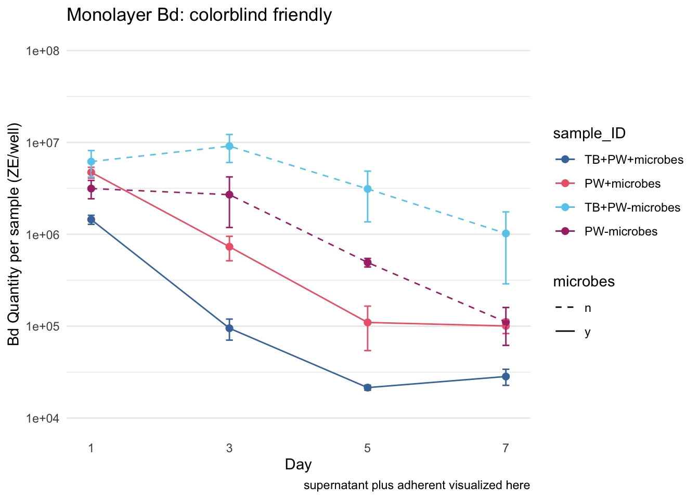
4b EDA
visualize y var: bd load
Code
# untransformedml_noday0 <- monolayer %>%filter(day !=0) %>%mutate(log_adh_plus_sup =log(adh_plus_sup)) # note: no zeroes so not log + 1ggqqplot(ml_noday0, "adh_plus_sup", title ="untransformed")
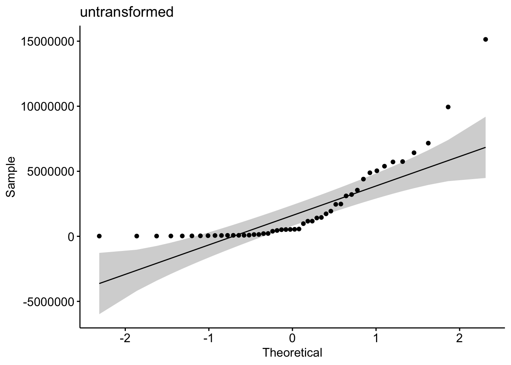
Code
shapiro.test(ml_noday0$adh_plus_sup) # nope
Shapiro-Wilk normality test
data: ml_noday0$adh_plus_sup
W = 0.70581, p-value = 1.684e-08
Code
hist(ml_noday0$adh_plus_sup) # note
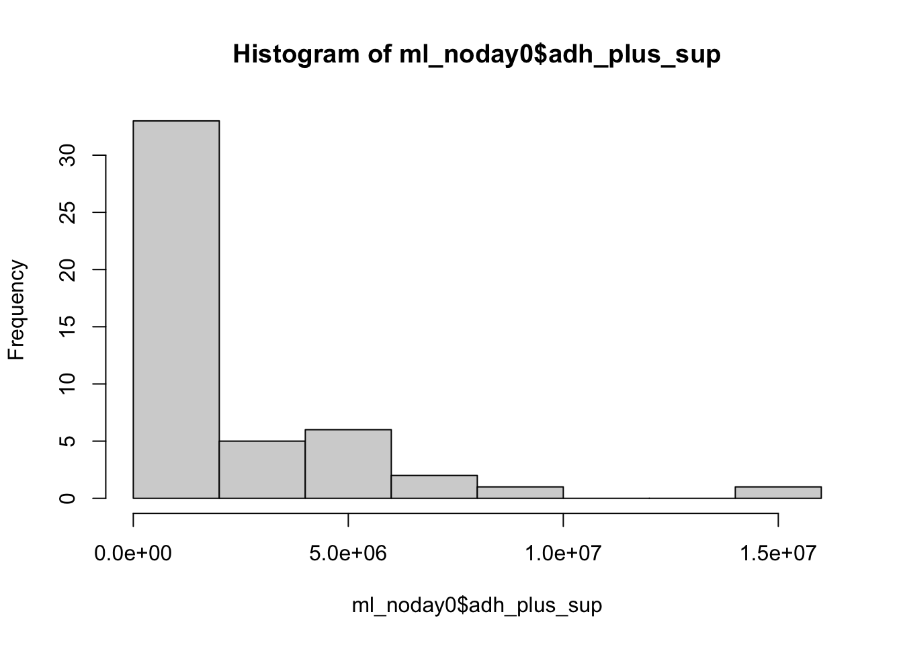
Code
# transformedggqqplot(ml_noday0, "log_adh_plus_sup", title ="log transformed") # gorgeous
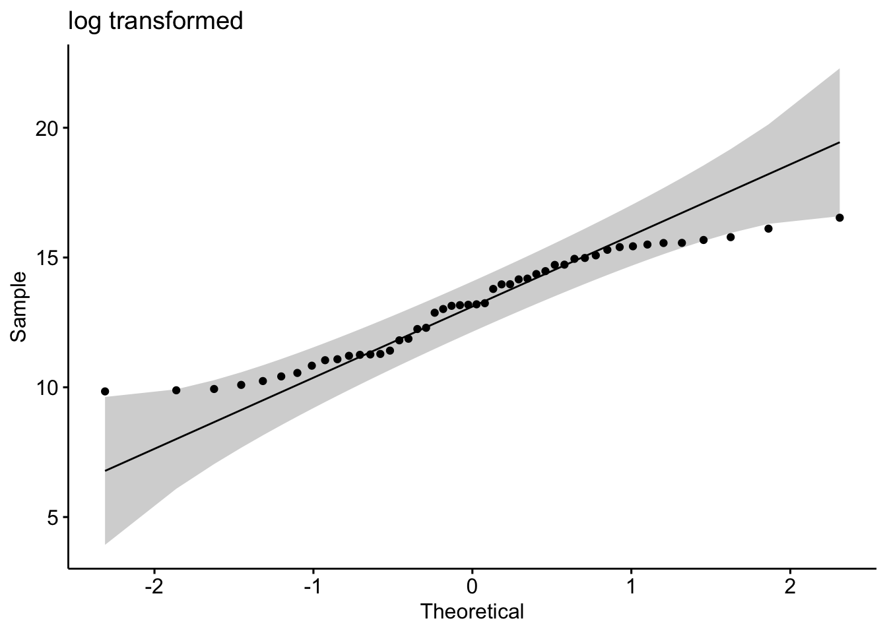
Code
hist(ml_noday0$log_adh_plus_sup) # better
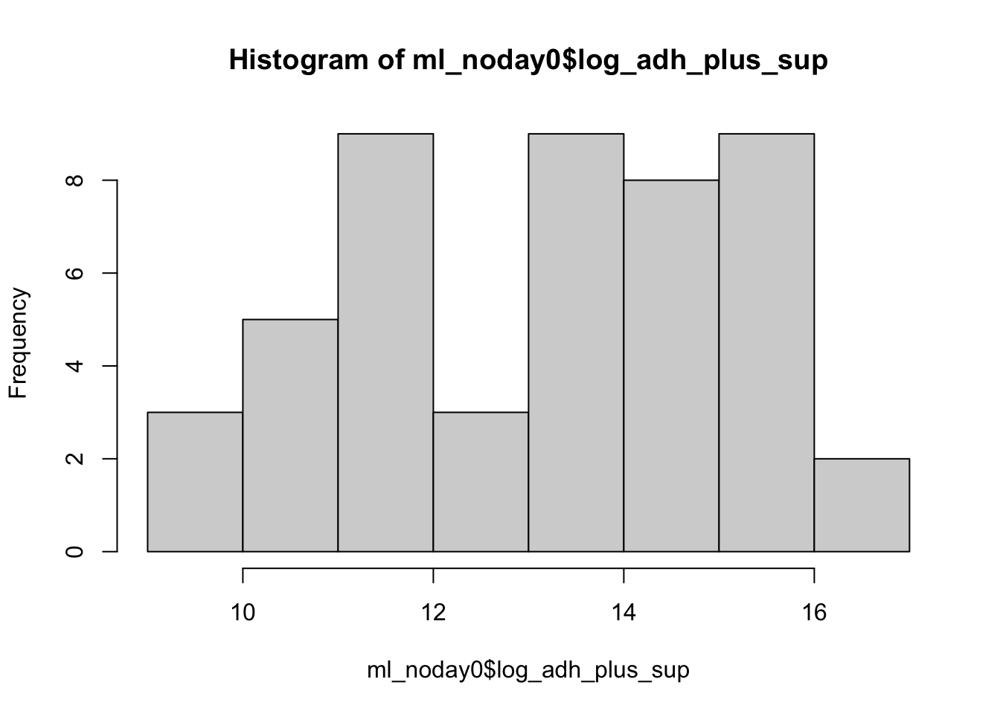
Code
shapiro.test(ml_noday0$log_adh_plus_sup) # p-value = 0.01321 not quite normal
Shapiro-Wilk normality test
data: ml_noday0$log_adh_plus_sup
W = 0.93767, p-value = 0.01321
4b Stats
y var: amount of Bd
x vars: day, treatment, microbes y/n, pw y/n, tb y/n
Best model: Bd ~ day*microbes*TB
Question: Does the amount of Bd in the sample differ across the treatments of presence of microbes, TB, and day?
Model: 3-way ANOVA
Code
# quick check: we want day as a FACTORml_noday0 <- ml_noday0 %>%mutate(day =as.factor(day))str(ml_noday0$day)
# set PW-microbes as reference (no milliQ here)ml_noday0$sample_ID <-factor(ml_noday0$sample_ID)ml_noday0$sample_ID <-relevel(ml_noday0$sample_ID, ref ="PW-microbes")